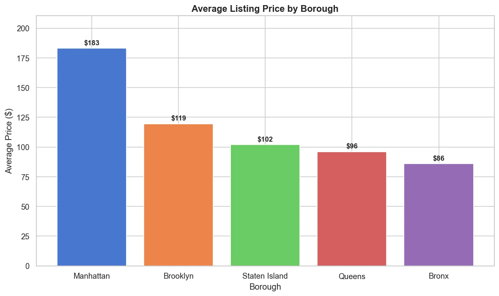
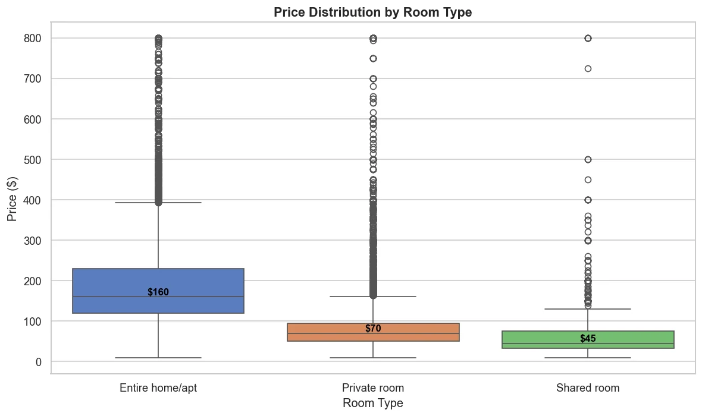
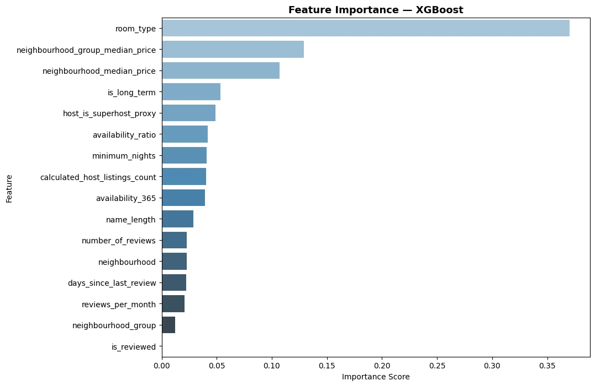

The problem
I built this on the public Airbnb NYC 2019 open dataset: 48,895 listings with price, room type, borough and neighbourhood, host activity, availability and review counts. It is a 2019 snapshot, not a live market, and I say so everywhere on these pages.
Pricing is the biggest lever a short-term rental host has, and most hosts work it blind. Underprice against comparable listings and the revenue gap compounds every night. Overprice and bookings dry up. The usual methods are gut feel, scanning a few neighbour listings, or a static template, because there has been no structured way to answer: what should this listing, in this borough, in this room type, actually charge?
So I built the missing layer in three pieces. An ETL pipeline that cleans the raw data and loads it into PostgreSQL. A SQL analytics layer, 16 queries, that answers the benchmark questions: prices by borough, room type and neighbourhood, host performance, availability patterns. And a prediction layer: an XGBoost model I trained on the cleaned listings, served through a FastAPI endpoint, with a Streamlit app so a host can enter their listing details and get a price estimate with a range.
My model answers one question per listing: given what similar listings in similar locations have charged, what is a realistic nightly price?
The short answer
The market data is unambiguous about one thing: location and room type set the price band. Average prices run from $86 in the Bronx to $183 in Manhattan, and the median room types sit at $160 for an entire home, $70 for a private room and $45 for a shared one. My model turns that into a per-listing benchmark: on my saved evaluation it explains about 46% of price variance (R² 0.4553) with a typical error of $83.10, and five-fold cross-validation lands at $80.65 ± $1.31, so I know the number is not a lucky split. I position the output as a benchmark midpoint with a range, not a price oracle: my API returns a low and high estimate of about ±$47 around the prediction, and I am upfront that roughly half of price variation comes from things this data does not contain. Every number on this page comes out of my own run logs and saved metrics.

Numbers at a glance
Where they come from: I log every cleaning and training run as it happens, so the row counts and cleaning actions come straight from my pipeline log, the model numbers from the metrics file my training run saves, and the query count from my own SQL file.
How to read each number
| Number | How I got it | How to read it |
|---|---|---|
| 48,895 → 48,884 listings | My cleaning pass dropped 11 listings priced at $0 | A $0 price is an invalid record, not a cheap listing. Everything else I capped or filled, I did not delete it. |
| $799 price cap | I clipped prices above the 99th percentile to it | The raw data tops out at $10,000 a night against a median of $106. Capping keeps those rows but stops them distorting my model. |
| 38,833 training rows | Rows with a value for every feature and the target | Most of the difference from 48,884 is the 10,052 listings that never received a review, whose recency feature has no value. |
| RMSE $83.10 | My best model (XGBoost), on a held-out test set of 7,767 listings | Typical prediction error in dollars. On a median price of around $106, that is a real but honest gap. |
| R² 0.4553 | Share of price variance my features explain | Listing attributes and location explain about 46% of the variation. The rest is detail this dataset does not have. |
| $80.65 ± $1.31 | Mean and spread of RMSE across my 5 cross-validation folds | My model performs consistently across different data splits, so the headline number is not a lucky split. |
What I found
The spread across the city is the benchmark
What does the market data actually tell a host?
Average prices run from $183 in Manhattan down to $86 in the Bronx, with Brooklyn at $119, Staten Island at $102 and Queens at $96. Room type splits the same way: median prices sit at $160 for an entire home, $70 for a private room and $45 for a shared one.
The practical consequence I kept running into is that a city-wide average is useless as a reference. A host charging $80 a night in the Bronx is above their market; the same price in Manhattan is far below it. Any benchmark has to be borough plus room type first, neighbourhood second. That is why I wrote my SQL layer to build exactly those cuts: borough and room-type summaries, the top neighbourhoods by price with a minimum listing count, and a percentile rank that tells a host where their price sits inside their borough.
What it means. The most valuable output of my analytics layer is not a number, it is the right comparison group.
Benchmark every listing against its borough, room type and neighbourhood before anything else.

My model is a benchmark with a range, not a price oracle
How good is the price prediction, really?
I trained three models on the same split. Linear regression reached an RMSE of $90.58 (R² 0.3529), random forest $83.83 (R² 0.4457), and XGBoost won at $83.10 with an MAE of $47.20 (R² 0.4553). Five-fold cross-validation on the winner gives a mean RMSE of $80.65 ± $1.31, so the held-out number matches the cross-validated one.
I turned that error into an honest output shape in the API. A real run of my service, which I captured in the screenshots on the project page, asked for an entire home in Williamsburg with a two-night minimum, and returned $243.58 with a range of $196.38 to $290.78. I build that range from the model's MAE, so it is a measured uncertainty, not a marketing buffer.
An R² of 0.4553 tells me my features explain about 46% of price variance: what a listing is, where it is, and how it operates. The remaining half lives in things this dataset does not carry: amenities, photos, listing quality, seasonality, the host's actual calendar. I would rather tell a host that than let them over-trust a number.
What it means. The prediction is a market reference point. A host should read the range and then weigh what they know that the data does not.
Quote the prediction with its range, and describe the model as a benchmark, not an appraiser.
Room type and price-encoded location carry my model
What actually drives the predictions?
My feature importance chart is blunt: room_type accounts for about 37% of the model's split importance, more than the next two features combined. Those next two are the price-encoded geography I added: the median price of the listing's neighbourhood (about 11%) and of its borough (about 13%). After that come the long-term flag, the professional-host proxy and availability, all in single digits.
The encoding is my favourite decision in this build. Raw neighbourhood names mean nothing to a model, and 221 of them would blow up into 221 one-hot columns. Instead I gave each neighbourhood its median price as a numeric feature, so the model sees Tribeca at $295 and Fordham at $55 and can split on real price context.
What it means. The model confirms what my EDA showed: what you rent and where you rent it set the band, and everything else adjusts within it.
Lead any pricing guidance with room type and location tier, and treat the other attributes as fine-tuning.

Demand signals barely move price in this data
Do reviews and availability explain pricing?
When I built the correlation heatmap, it said no, not much. No feature I kept correlates with price above 0.12: host listing count and availability sit at 0.12, review counts at -0.06, and the recency of the last review at -0.01. The one strong correlation with price (0.37) is price_per_review, which I excluded from the model because I derived it from price itself.
That is a finding in itself. Reviews and availability describe activity and supply, not what a listing can charge. A listing can be fully booked all year and still be cheap, and a listing with no reviews can still sit in an expensive neighbourhood.
What it means. Any pricing advice built on review activity would be reading noise. The benchmark story has to come from location and room type, which is what my model and my SQL layer both do.
Do not sell review or availability metrics as pricing levers on this data.
What I would do next
Decide with the range, not the midpoint
High priority- Evidence
- My API returns a low and high estimate built from the model's measured MAE ($47.20); my saved run shows $243.58 with a range of $196.38 to $290.78.
- What to do
- Use the midpoint as the market reference and the range as the decision space: price near the bottom to fill calendar, near the top to test demand.
- What I expect
- Hosts get a defensible pricing strategy instead of a single number to over-trust.
Refresh the data before hosting decisions
High priority- Evidence
- I trained on the 2019 open snapshot, so my model only knows that market.
- What to do
- Re-pull current listings, re-run my pipeline, and retrain before quoting benchmarks against today's market.
- What I expect
- I built the whole system to be re-runnable, so freshness is a scheduled task, not a rebuild.
Add the signals that carry the missing half of price
Medium priority- Evidence
- R² 0.4553 tells me about 54% of price variance is unexplained by listing attributes, location and activity.
- What to do
- Join amenities, review quality scores and calendar seasonality onto the listings and re-run my feature experiments.
- What I expect
- The benchmark range tightens where it matters most, the mid market.
Surface the neighbourhood benchmarks in my app
Medium priority- Evidence
- My SQL layer already computes neighbourhood rankings and a per-borough percentile rank for every listing.
- What to do
- Pipe those query results into my Streamlit neighbourhood explorer so a host sees their percentile, not just a prediction.
- What I expect
- My analytics layer and my prediction layer reinforce each other on one screen.
Treat the top end as out of scope
Medium priority- Evidence
- I capped prices at the 99th percentile ($799) during cleaning, and my actual-versus-predicted chart shows the model underpredicting at high actual prices.
- What to do
- Say so in the product: my model benchmarks the everyday market, and luxury listings need a different approach.
- What I expect
- The tool keeps its credibility by refusing predictions it cannot support.
What this can't tell you
I trained on the public 2019 NYC open dataset, so nothing here measures today's market, and New York's short-term rental rules have changed since.
R² 0.4553 is my documented baseline, not a claim of accurate appraisal. About 54% of price variance is not explained by my data.
Because I capped training prices at $799 (the 99th percentile), my model has not seen true luxury pricing and should not be asked about it.
The dataset has no amenities, review scores, photos or calendar detail, which is where much of my unexplained variance lives.
These pages describe the 2019 build exactly as I saved it. I have not yet re-run the full stack on fresh data, which is why the refresh sits at the top of my recommendations.